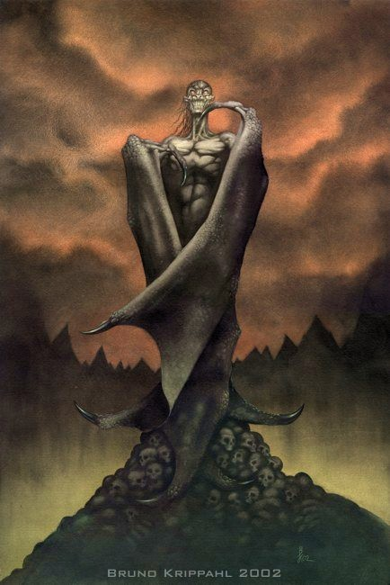

| Climate/Terrain | Any (The Abyss) |
| Frequency | Very Rare (Rare) |
| Organization | Solitary |
| Activity Cycle | Night (Any) |
| Diet | Carnivore |
| Intelligence | High (13-14) |
| Treasure | A |
| Alignment | Chaotic Evil |
| No. Appearing | 1 |
| Armor Class | 0 |
| Movement | 15, Fl. 24 |
| Hit Dice | 8 + 3 |
| Thac0 | 10 |
| No. of Attacks | 2 Artigli + 1 Morso |
| Damage / Attacks | 1d6+6 / 1d6+6 / 1d8+7 |
| Special Attacks | Vedi sotto |
| Special Defenses | Vedi sotto |
| Magic Resistance | 20 % |
| Size | L (alto 3 metri) |
| Morale | Fearless (19) |
| XP value | 10000 |
Descrizione
Il winged demon è un raro e solitario demone notturno proveniente dagli Abissi. Si nutre di cadaveri freschi che usa per rigenerare le proprie ferite. Quando trova un varco per il primo piano materiale si trasferisce in questo per nutrirsi di umani e semi-umani dei quali mangia alcuni organi per poi cucirne i cadaveri squartati e mummificarli per abbellire la propria dimora demoniaca. Nel primo piano materiale è infastidito dalla luce del giorno e anche se non subisce danni alla sua esposizione preferisce starsene rintanato nella sua tana per poi uscire di notte e cacciare le sue prede...
Combat
Il winged demon è dotato di una forza incredibile (19) che gli dona una thac0 migliore di quella propria dei mostri dei suoi dadi vita. Attacca con ferocia attraverso i suoi due artigli e il temibile morso, inoltre è molto agile e avendo anche una pelle coriacea e dura è difficile da colpire.
Se colpisce una creatura fino a taglia Medium con tutti e due gli artigli nello stesso round può decidere di afferrarla, dal round successivo avrà gli artigli impegnati ma potrà attaccarla con il morso avendo un bonus al tiro per colpire di +3, inoltre la vittima non potrà lanciare magie che richiedono componenti somatici e per effettuare qualsiasi altra azione che richieda l'uso degli arti dovrà effettuare un check di forza o perderla. La vittima potrà provare a liberarsi (azione che richiede l'azione di un round) superando un check di piegare ferri dolci sulla forza. Il winged demon può volare trasportando con se la creatura afferrata se questa ha un peso fino a 400 lbs., creature dal peso superiore non permetteranno al winged demon di volare.
Il winged demon ha un olfatto straordinario che gli permette di rendersi conto della presenza di creature anche nascoste (o invisibili) entro 100 metri di distanza. Inoltre ha una vista notturna che gli permette di vedere di notte chiaramente come se fosse di giorno.
Il winged demon è immune alle armi normali, ed è immune all'energia negativa (che però non lo cura). Inoltre è immune ad ogni forma di incantesimo mentale o di controllo.
Il winged demon possiede un particolare potere rigenerativo che può usare nel round immediatamente successivo all'uccisione di una creatura umana, semi-umana od umanoide. Nel round successivo alla morte di una di queste creature il winged demon può cibarsene (azione che richiede l'intero round nel quale costui si considera stunned e non può effettuare altre azioni) mangiando gli organi interni e rigenerando immediatamente fino a 25 punti ferita persi.
Habitat/Society
Nonostante il winged demon sia una creatura perfida ed intelligente costui è dominato da istinti bestiali che gli impongono ogni notte di andare a caccia di una nuova creatura umana o semi-umana di cui cibarsi, una volta scelta una preda il winged demon farà di tutto per ucciderla. Il winged demon è una creatura solitaria e sebbene possa dimostrarsi abile in alcune competenze ed attività complesse (come ad esempio l'imbalsamazione o l'utilizzo di congegni meccanici) non ha una lingua o una forma di comunicazione orale, o almeno mai nessuno ne ha mai sentito uno parlare, anche se molti sostengono che costui possa invece spesso capire cosa gli altri dicono.
Ecology
Il winged demon adora crearsi delle tane in profonde e buie grotte, spesso con trappole letali, dove trascorre le ore diurne e massacra le sue vittime fra atroci sofferenze. Sembra provi un particolare piacere a non uccidere subito le vittime prescelte per farle, invece, morire tra menomazioni di organi e atroci sofferenze.
Mystical Resource Sourge
(Membrana delle Ali) Quantità:
1, Presenza 50% - Scuola di Magia:
Abjuration
- Qualità della Risorsa: Common.
Mystical Resource Sourge
(Cervello) Quantità: 1, Presenza 50% - Effetto Particolare:
Resistenza Mentale
- Qualità della Risorsa:
Uncommon.
Mystical Resource Sourge
(Cuore) Quantità: 1, Presenza
50% - Scuola di Magia:
Conjuration/Summoning
- Qualità della Risorsa: Uncommon.